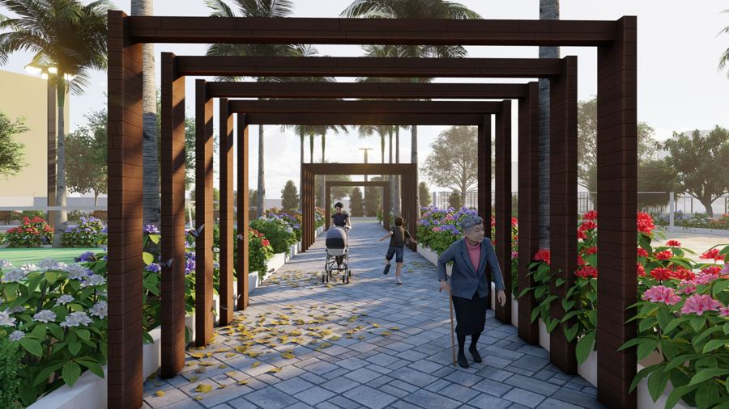

Questions, answered.
20 answers to the questions clients ask us most: how we work, timelines, fees, materials, approvals and execution.
General
Where is Inara Architects based?
Our studio is at 24, Mangadu Main Road, Moulivakkam, Chennai 600125. We are open Monday to Friday, 9:30 am to 5:30 pm. Please call or WhatsApp us before visiting so we can make sure the right person is in the studio.
Which areas do you work in?
We are based in Chennai and work across Tamil Nadu. Our portfolio includes projects in Chennai, Coimbatore, Kallakurichi, Mannargudi, Tindivanam, Chinnasalem, Elavanasurkottai and more. For projects further away, get in touch and we will discuss how we can support you.
What kinds of projects do you take on?
Independent houses and villas, apartments, full-home interiors, offices, showrooms, banquet halls, hospital interiors, landscape and park design, and renovations. We are happy to look at smaller projects, such as a single room or a facade upgrade, too.
Do you only design, or do you build as well?
Both. We take responsibility for concept development and execution. Civil construction is led by our director Mr. Munusamy through MS Constructions, and our design team supervises on site, so the drawings and the finished building match.
Process and timelines
How does a project begin?
With a conversation. We meet you (at the studio, at your site or online), understand the brief and the budget, and visit the site. We then send a written proposal with the scope, stages and fees before any design work starts.
How long does the design stage take?
It depends on scale and how quickly decisions are made. As a guide, concept design for an independent home usually takes a few weeks, and a full set of working drawings follows over the next one to two months. We agree a schedule with you at the start.
How long does it take to build a house?
A typical G+1 or G+2 home takes roughly 10 to 14 months from foundation to handover, depending on size, finishes, approvals and weather. Interiors for a finished apartment can often be completed in 8 to 12 weeks. We give you a project-specific schedule before work begins.
Will I see my home before it is built?
Yes. We produce photorealistic 3D views for exteriors and interiors, so you can see materials, light and furniture before anything is built. Most of the images in our portfolio are these design visualisations.
How involved do I need to be?
As much as you like. We need your input at key decision points: brief, concept, material selection and major site milestones. Between those we handle the detail and keep you updated.
Fees and budgets
How do you charge for your services?
Fees depend on the scope (architecture, interiors, or both), the size of the project and whether we are also handling execution. We provide a transparent, itemised fee proposal after the first meeting, so you know exactly what is included at each stage.
Can you work within a fixed budget?
Yes, and we prefer to know your budget from day one. We design to it, share a preliminary cost estimate at concept stage, and update the estimate as the design develops so there are no surprises.
Do you provide cost estimates and a BOQ?
Yes. We prepare cost estimates and a bill of quantities from the working drawings. These help you compare contractor quotes and track spending during construction.
Design and materials
Do you design according to Vastu?
If Vastu is important to you, tell us at the briefing stage. We consider it from the first planning sketch, alongside light, ventilation and site orientation, rather than adjusting a finished design later.
Do you design sustainable or climate-responsive buildings?
Our vision is environmentally responsible design. In practice that means orienting buildings to the sun, using deep overhangs and screens for shade, planning for cross-ventilation, and choosing durable materials that suit the local climate.
Can you help us choose materials and furniture?
Yes. We prepare material and finish schedules, go with you to showrooms when helpful, and design custom joinery such as wardrobes, kitchens, TV units and pooja rooms.
Do you only design modern homes?
Our work leans contemporary, but every design starts from the client, the site and its context. We are comfortable working with traditional elements, natural materials and regional details.
Approvals and execution
Can you help with building approvals?
We prepare the architectural drawings required for planning permission and building approval submissions, and coordinate with structural and services consultants as needed. The applicable authority depends on where your site is located.
Who supervises construction?
Our civil execution team handles construction, and our designers make regular site visits at key stages to check quality, resolve details and keep the work true to the drawings.
Can you take over a project that someone else has started?
Often, yes. We first visit the site, review the existing drawings and work done, and then advise honestly on what is needed to complete it well.
Do you handle renovation of occupied homes?
Yes. We plan renovation work in phases where possible, so families can continue living in part of the home while other areas are being worked on.
Ask us directly.
Call +91 98408 74319 or send a message. We reply within two working days.
Contact the studio
Let’s shape your space in light.
Tell us about your site, your plans and your budget. We will get back within two working days with next steps.